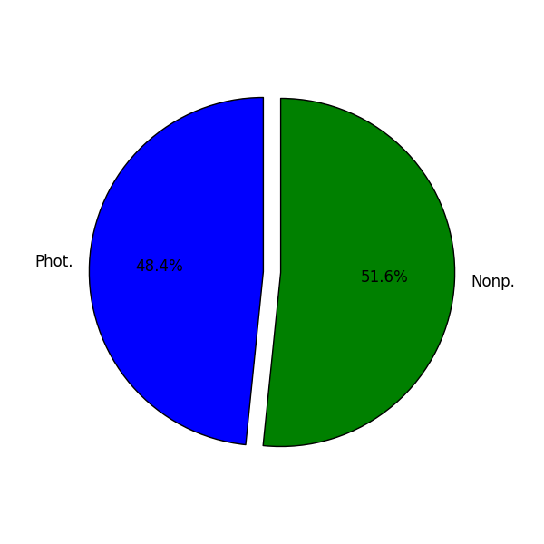
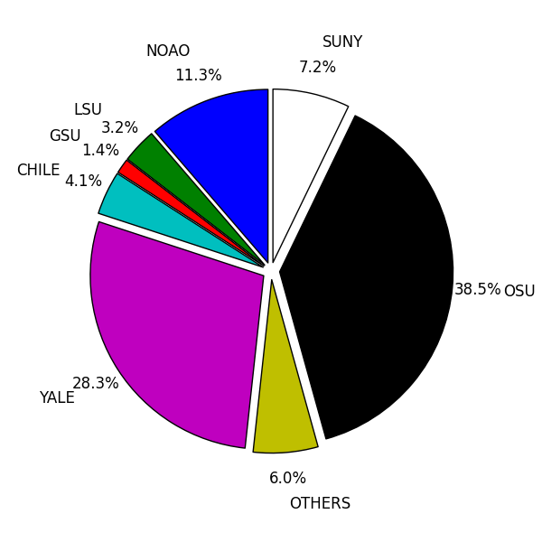
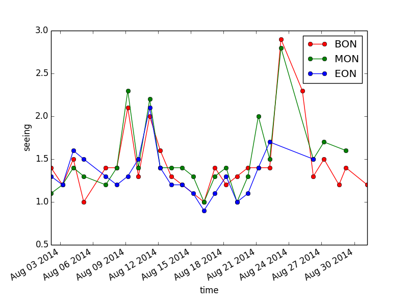
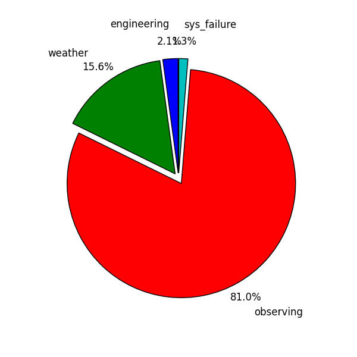
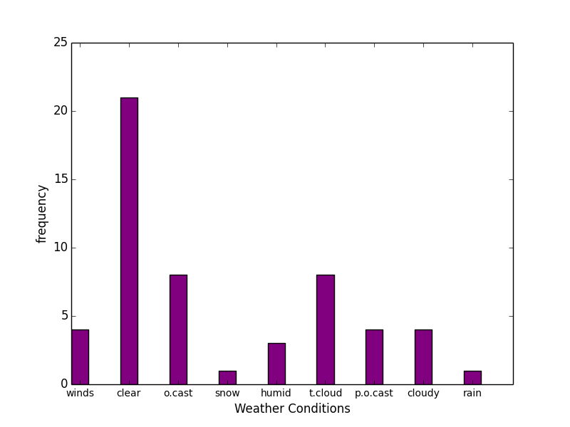
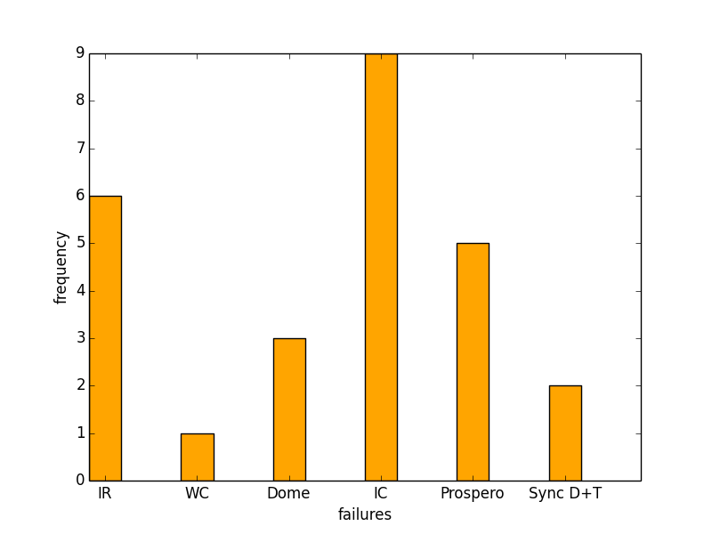
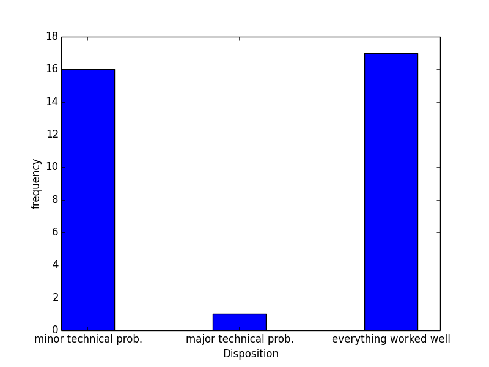

SMARTS 1.3-m Night Report Summary 140801
created on 2014-09-19 10:31:18.767742
Total Nights :31
Nights With No Observing : 1
Observing Conditions

Program Used
Total
Photometric
15
Nonphotometric
16
Science Observation Break Down

Project ID
Hours
ETS
3.6
NOAO-13B-0270
5.1
CHILE-13B-0039
3.8
YALE-08A-0001
23.4
NOAO-14A-0410
5.3
SUNY-03A-0013
1.4
NOAO-14B-0127
3.3
OSU-03A-0001
46.2
SUNY-03B-0001
0.1
LSU-14A-0001
5.9
NOAO-13B-0389
4.1
OSU-03B-0001
23.9
NOAO-14B-0243
2.4
SUNY-04A-0011
11.5
YALE-03A-0001
28.1
CHILE-14A-0077
2.5
GSU-03A-0006
2.2
CHILE-06B-0288
1.1
NOAO-11B-0005
0.4
MANLY-14B-0001
4.9
TEST
0.0
GSU-14A-0001
0.3
DUBLIN-11B-000
2.5
Seeing Conditions

BON Statistic
Seeing Value
max
2.9
mean
1.5
min
1.0
MON Statistic
Seeing Value
max
2.8
mean
1.5
min
1.0
EON Statistic
Seeing Value
max
2.1
mean
1.3
min
0.9
Time Loss & Observing

task
hours
engineering
7.5
weather
54.5
observing
283.5
ToO
0
sys_failure
4.5
Weather Conditions

conditions
hours
strong winds
4
clear
21
overcast
8
snow
1
high humidity
3
thin clouds
8
partial overcast
4
cloudy
4
rain
1
cirrus @ horizon
1
fog in the ravine
1
cirrus towards the horizon
1
System Failures

failure
freq.
IR computer failed
6
WC computer failed
1
Dome Failure (shutter/motor/tracking)
3
IC computer failed
9
None
14
Failure with Prospero
5
Synchronization problems between the dome and the telescope
2
Night Disposition

Disposition
freq.
minor technical problems
16
everything worked well
17
major technical problems
1